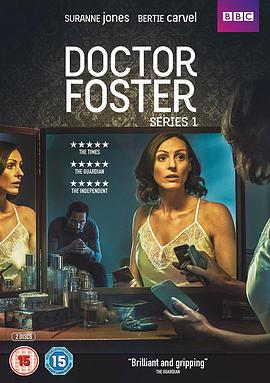

福斯特医生 第一季 / Doctor Foster Season 1
又名：出轨的爱人
女主长得好像诺一妈妈。。
作品信息
| 导演 | 汤姆·沃恩 / 布鲁斯·古迪森 |
| 编剧 | 迈克·巴特利 |
| 主演 | 苏兰·琼斯 / 伯蒂·卡维尔 / 汤姆·泰勒 / 朱迪·科默 / 泽斯塔·乔尼森戴拉 / Shazia Nicholls / 维多利亚·汉密尔顿 / 亚当·詹姆斯 / 莎拉·斯图尔特 / 内尔·斯杜克 / 玛莎·豪-道格拉斯 / 克莱尔-霍普·阿什蒂 / 丹尼尔·切尔奎拉 / 普拉萨纳·瓦纳拉佳 / 珊·布鲁克 / 奇安·巴里 / Charlie Cunniffe / Megan Roberts / Helena Lymbery / 弗兰克卡瓦 |
| 类型 | 剧情 |
| 制片国家/地区 | 英国 |
| 语言 | 英语 |
| 首播 | 2015-09-09(英国) |
| 季数 | 1 |
| 集数 | 5 |
| 单集片长 | 60分钟 |
| IMDb | tt4602768 |
最后一次看到是 2026-08-12T21:12:27+08:00 · 豆瓣原页